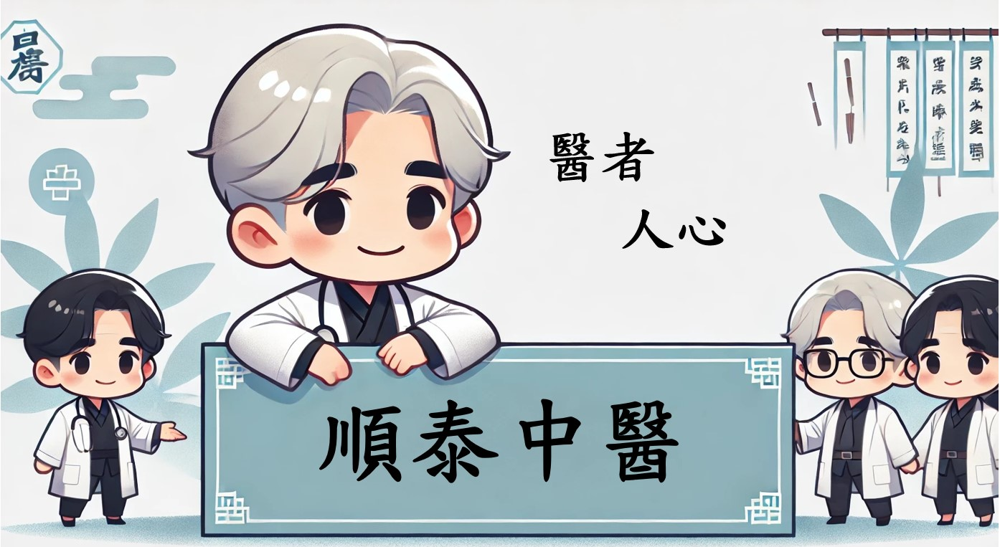

關於我們
順泰中醫診所結合傳統中醫智慧與現代醫學技術，致力於調理身心、預防疾病。多年來，我們秉持著「以患者為中心」的理念，為每位求診者提供專業、貼心的診療服務，幫助您恢復健康與活力。
診療服務
- 醫師診斷藥物治療
專業醫師進行診斷，根據病情開立適合的藥物，幫助患者恢復健康。
- 針灸與拔罐療法
透過針灸刺激穴位，促進氣血循環，並結合拔罐改善經絡堵塞。
- 草藥調理與配方
獨家調製草藥，舒緩部位疼痛，與各式湯藥(男女轉骨湯、四神湯、十全湯等等...)。
- 推拿按摩放鬆
運用中醫推拿技術，舒緩肌肉僵硬與疲勞，提高身體舒適度。
- 牽引拉伸舒展
適用於脊椎與關節調整，幫助恢復靈活性，減少疼痛感。
- 電療緩解肌肉
透過低頻電療促進血液循環，放鬆緊繃的肌肉，減輕不適。
- 健康管理與諮詢
提供個人化健康建議，幫助養成良好的生活與飲食習慣。
診所資訊
電話： 04-7294699
地址： 500彰化縣彰化市仁愛路110號1樓
看診時段
| 週一 | 週二 | 週三 | 週四 | 週五 | 週六 | 週日 | |
|---|---|---|---|---|---|---|---|
| 上午8:30 ~ 12:00 | [ ✗ ] | ⭕ | ⭕ | ⭕ | ⭕ | [ ✗ ] | ⭕ |
| 下午3:00 ~ 6:00 | ⭕ | ⭕ | [ ✗ ] | ⭕ | ⭕ | [ ✗ ] | [ ✗ ] |
| 晚上6:00 ~ 9:00 | ⭕ | ⭕ | [ ✗ ] | ⭕ | ⭕ | [ ✗ ] | [ ✗ ] |